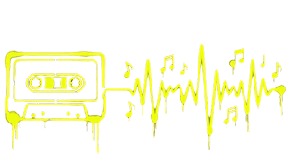

UBA — Santiago Fiorino
y Pablo Riera (2025)
Investigaron el ajuste de modelos de difusión para generar audio a partir de instrucciones en lenguaje natural, trabajando con modelos capaces de producir canciones completas.
